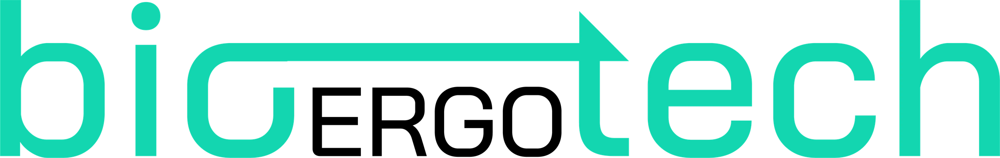

We build software for hospitals, doctors and pharmacists. Each product starts from a specific problem in a hospital, a health authority or a medical society.
We are a small team in Taranto and Zurich. We work with hospitals, health authorities and medical societies on a problem they already have, often first as a paid consulting project.
When a solution works, we turn it into a product that other institutions can buy. We started in April 2025.
Daniela Marotto, rheumatologist, Italian College of Rheumatologists (CReI)
Pasquale Persico, market access at Gilead Sciences
Roberto De Ponti, Managing Director, 3B Future Health Fund
Guido Putignano, Domenica Leone and Carmine Pisano
Oncologists and rheumatologists. They lose hours to paperwork and see chronic patients only every few months.
Frankura and BonnieHospital pharmacy directors and regional pharmacy services. They manage large drug budgets, often in spreadsheets.
VIS Pharma CompassLocal health authorities, hospitals and regional governments. They hold the budget, so they are the ones who sign the contract.
All productsMedical societies and universities are partners in some projects. The Italian College of Rheumatologists is working with us on the design of the Bonnie study, and the University of Maryland, Baltimore runs Skippy with us.
For oncology departments. We have a pilot agreement with ASL VCO, in Piedmont, and we are running the pilot.
Every year ASL VCO handles 1,100 cancer intake forms, 525 oncology visits and 1,547 tumour board cases. Most of the data is typed by hand and copied from one form to the next.
It runs on top of the hospital's existing software.
About 1,400 hours a year, close to €67,000 at €48 an hour. That is roughly seven months of one doctor's full-time work.
Our estimate, based on ASL VCO's own volumes.
Sources: MarketsandMarkets 2026, The Business Research Company 2026, CERGAS Bocconi OASI Report 2025, Health Holding Company.
For hospital pharmacies and regions. A working prototype, not yet under contract.
In 2025 the Italian public health system spent €4.8 billion more than the legal ceiling on the medicines it buys directly, up from €4.0 billion in 2024. Pharmacy teams have the data but work in spreadsheets, so they spot savings late.
It only reads aggregated data, so it is not a medical device. Spending figures: AIFA, final reports for 2024 and 2025.
Over 250,000 dispensing records and about €450 million of yearly spend.
Sales start with a €9,000 analysis of the client's own data, done in three weeks.
For rheumatology patients, designed with the Italian College of Rheumatologists (CReI). Interface prototype ready.
A patient with rheumatoid or psoriatic arthritis sees the rheumatologist every three to six months. Flares, side effects and stopped treatments in between are rarely written down, so each visit starts from what the patient remembers.
CReI brings together about 500 rheumatologists working in hospitals and in the community. We are designing the study with them. Called PROSSIMA, it would follow patients with rheumatoid arthritis, psoriatic arthritis and axial spondyloarthritis.
CReI would own the study and the data. We build and run the software. We built the prototype at our own cost before asking them to commit.
Bonnie is built on the Frankura platform. It is not a medical device.
For people leaving prison, with the EMBRACE Initiative at the University of Maryland, Baltimore. Interface prototype ready.
People coming out of prison are usually handed a list of phone numbers. Programmes count a referral as soon as it is sent, even if the person never gets help.
| Phase | People |
|---|---|
| Pilot | 20 |
| Baltimore | 500 |
| Maryland | 2,000 |
| Other programmes | later |
EMBRACE owns the programme and the data. We build and run the software. It is our first project in the United States.
A hospital, region or medical society comes to us with a problem. We work on it as a paid project, or start with a paid analysis like the €9,000 one for VIS. We build a first prototype at our own cost, and the full product only once someone is paying for the work.
What we build goes into one shared platform, Frankura: recording clinical data, patient consent, audit trails, the AI layer and data storage in Europe. New products start from there, and Bonnie is built on it.
Once a product works for one client, we offer it to the next. ASL VCO follows the intake and tumour board model of the Piedmont oncology network, so the same workflow applies across the region. A new region for VIS needs a data adapter, not a new system.
bioERGOtech works in two parts. The Foundation finds the clinical needs and does the research and consulting. Hadi Health S.r.l., our clinical AI venture, sells and runs the software in hospitals.
With ASL VCO for Frankura. We are running the pilot.
VIS tested on real data from Regione Abruzzo.
ASL Salerno, Ospedale Miulli, ASL Taranto and ASL Caserta.
And about €120,000 in advanced pipeline, as of June 2026.
Map: ISTAT boundaries, CC BY 4.0.
Each project is listed on bioergotech.org, with what it has shown and what it has not.
Our lab and offices are in Taranto. Guido Putignano also works at ETH Zurich's Department of Biosystems Science and Engineering.
We test each product where it is easiest to prove, keep what works, and offer that to Saudi health clusters.
Do public hospitals buy it and use it? With ASL VCO, Regione Abruzzo and CReI.
Does it work for thousands of people? With the University of Maryland, Baltimore.
Does the science hold up? With ETH Zurich.
We offer what passed to health clusters, starting with one pilot through ScaleX.
Testing in Italy, the US and Switzerland
ScaleX, and a first pilot in one Saudi health cluster
First contract in Saudi Arabia
Our products reach about 5 million people
Our goal for 2029: our products in use in health systems that together serve about 5 million people.
Skippy adds 2,000 people leaving prison in Maryland.
| Where | People | Status |
|---|---|---|
| ASL VCO, Frankura | 153,000 | Pilot running |
| Regione Abruzzo, VIS | 1.27 million | Tested on data |
| ASL Salerno, Taranto and Caserta | 2.5 million | In talks |
| One Saudi health cluster | 1 million | With ScaleX |
| Total | About 5 million |
Residents on 1 January 2025 (ISTAT). A Saudi health cluster serves about 1 million people (Ministry of Health), and the 20 clusters serve over 20 million (Health Holding Company).
We want to open in Riyadh with products that are already being tested in Italian public health. Saudi public healthcare is moving to 20 regional health clusters, each running the hospitals and clinics for about 1 million people. That is close to how the Italian health authorities we work with are organised.
A paid analysis of the cluster's own data in three weeks, the software running within 90 days, and a joint review at six months.
Four products, a pilot running with ASL VCO, and a plan to reach 5 million people by 2029.